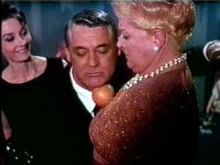

|
Charade/A,F |
|
UAV/1963/113m/PS
1.33 |
Charade is a marvelous film, filled with grand humor and
taught suspense. Teaming Cary Grant and Audrey Hepburn is casting genius and director
Stanley Donen gets the charming and vivacious performances from his stars.
 |
|
Squeezing
the orange.©Universal |
Filmed in beautiful Paris locations, Charade is a hunt
for money and a reckoning for dark deeds of the past. Hepburn plays a gorgeous innocent
swept into the intrigue to recover the ill begotten gains of her murdered husband. The
dialogue is crisply penned and impeccably delivered.
The travesty of a transfer is a grave injustice
to this great film. It appears to have been sourced from a VHS tape;at least the quality
is no better and the faults are exacerbated by cranking of the sharpness control during
the transfer. The film is so good that it still captures your attention and though it
looks pathetic, I managed to get through the viewing deriving tainted pleasure. The
2-Channel Dolby sound is actually quite clean. Beware of setting your decoder cautiously
as some settings may be extremely loud.
|
|
|

Selections from the feature archive
include articles on
Akira Kurosawa, Frank
Darabont, Blonde
Bimbos, Hollywood
Street Gangs, or Vietnam:
The Hollywood Pariah, and many more....
Sturges
Emerges
Preston Sturges was Hollywood's resident comic genius for more
than a decade. His movies are timeless. Click on his image to read
all about it.

 Direct
from the corridors of the Home
Theater Forum, Home Theater Talk is
the newest place on the Net to
discuss everything home theater.
Friendly atmosphere and
knowledgeable folks are the secret
ingredients. Direct
from the corridors of the Home
Theater Forum, Home Theater Talk is
the newest place on the Net to
discuss everything home theater.
Friendly atmosphere and
knowledgeable folks are the secret
ingredients.
 Gary
Morris's insightful publication Bright Lights Film Journal
turns the celluloid in films from a unique perspective. Click on the image above for more pure movie views. Gary
Morris's insightful publication Bright Lights Film Journal
turns the celluloid in films from a unique perspective. Click on the image above for more pure movie views.
 . .
The
Movie Poster Archive includes extensive poster images from the
films of stars like Susan Hayward, Kirk Douglas, Katharine
Hepburn and many more. Our featured star is Cary
Grant.
|